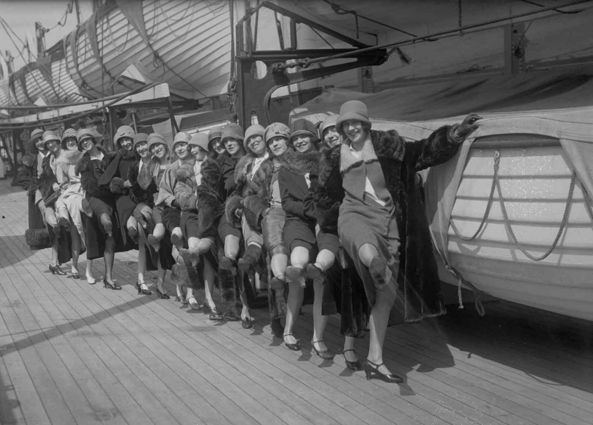

批判理论在1937年才作为一个术语被提出来。法兰克福学派当时正流亡于美国。其成员担心来自新家园的政治排斥，同时设法对研究所加以保护，便采用这一术语作为掩护。批判理论毕竟是在西方马克思主义的框架内产生的。研究所的代表人物包括格奥尔格·卢卡奇和卡尔·柯尔施等共产主义者——他们从一开始就加入了研究所。恩斯特·布洛赫也显著地融入了这一传统。1917年布尔什维克取得政权，连同1918——1923年欧洲激进起义带来的鼓舞使他们获得了启发。
这些激进知识分子支持工人阶级采取直接行动，对议会改革主义表示怀疑，强调意识形态在维护资本主义中扮演的角色，也强调阶级意识对于推翻资本主义的决定性作用。他们突出了哲学唯心主义为历史唯物主义留下的遗产，以及黑格尔和马克思之间的关联。西方马克思主义者无须谈论文本正统或历史唯物主义的固有性质。卢卡奇在其巨著《历史与阶级意识》（1932年）中简明扼要地阐述了这一问题，为后来对于批判理论的全部理解奠定了基础：
卢卡奇在一战之前已经是匈牙利文化现代主义的杰出人物。他很快就成为共产主义运动中或许是最杰出的知识分子。《历史与阶级意识》是西方马克思主义影响深远的作品，它启迪了批判传统中的几乎每一位主要思想家。不过，很容易理解卢卡奇、柯尔施以及其他西方马克思主义者为何在1924年共产国际第五次代表大会上遭到指责。他们的著作折射出革命的英雄岁月：其工人协会、文化实验以及救世主式的期望。他们也将对社会的研究与对自然的任何探索截然分开，由此削弱了社会主义的科学版本的必然性。事实上，卢卡奇喜欢引用詹巴蒂斯塔·维科（1668——1744年）提出的“历史与自然的区别在于人类创造了其中之一，但没有创造另外一个”。西方马克思主义以其乌托邦憧憬、对待既定哲学体系的批判态度以及坚决主张赋权于无产阶级，体现出布洛赫所谓的“地下革命史”。
人类解放成为它的目标。批判方法决心以一切形式反抗“霸权”——这里借用因安东尼奥·葛兰西的《狱中札记》（在他离世后，于1971年出版）而闻名的术语。葛兰西是意大利共产党创始成员之一，随后在贝尼托·墨索里尼手下遭受折磨并在监狱中离世，他并没有对法兰克福学派产生重要影响，但他的作品使西方马克思主义尤为引人注目。
他从根本上关注公民社会、其非经济组织及其指导思想，强调主流文化如何造成被统治者的顺从习惯。他坚持认为，要向工人阶级赋予权力，就需要一种反霸权策略，并通过新的公民组织加强其自治能力。这样一种策略需要的组织并不仅仅来自上层，或通过某种从民众当中分离出来的固化的先锋政党，而是通过辩证地与无产阶级联系在一起的有机知识分子的实践工作。
这是西方马克思主义者共同的基本观点。他们都是激进人士。他们也都将历史唯物主义解释为一种实践理论，它不应是描述性的，而应是禁止性的。他们的目的是澄清变革行动不断变化的条件和前提。这一观点致使马克思主义机械式地将思想和范畴从一个时期延续到另一个时期变得不再合理。或者，换个说法，他们使历史唯物主义呈现出历史性。
卡尔·柯尔施在《马克思主义与哲学》中对这一观点做出了重要贡献。他显然是西方马克思主义最不知名的代表，更多地将意识形态解释为影响行为的生活体验而不是对于经济的某种反应。将权力赋予被剥削者有赖于觉悟、教育以及实践经验。俄国革命使柯尔施走向激进，他也受到苏维埃和工人协会运动自发高涨的启发，在其小册子《什么是社会主义化？》（1919年）中为激进的经济民主谱写了蓝图。他于1920年加入德国共产党，1923年无产阶级起义期间在图林根担任司法部长，1926年遭到清洗退出共产国际后，对有组织的流亡极左知识分子产生了重要影响。
《唯物主义历史观》（1929年）是对马克思主义的所有科学理解的冲击，而柯尔施从未放弃他对赋权于无产阶级的必要性的信念。他的最后一部著作《卡尔·马克思》（1938年）是思想传记的杰作。柯尔施坚持认为任何观点都可能出于反动的目的得到解释，他希望使共产主义革命实践遵循其自身的理想，为此强调了“历史特定性”在方法上的重要性。他对待马克思主义并没有不同于任何其他哲学形式。其特征和运用在任何特定时间都从历史背景下的组织利益、限制条件以及行动机会方面得到理解。它无法再作为官方信条，也不再是具有先验主张的不可改变的体系。马克思主义也有可能被操纵，乃至被批判。
霍克海默1937年的论文《传统理论与批判理论》就建立在这些观念之上。他没有将新观念视为已经完成的逻辑体系或一系列确定的主张。他致力于阐明自由的那些被忽视的面相，坚持认为现实具有历史性构成特征，对无产阶级的解放使命已经产生怀疑，由此将批判理论设想成主流哲学范式的替代品。其他思想形态尽管自称具有中立性和客观性，却被认为是对既存秩序的肯定。鉴于它们忽视了既存秩序的历史性构成特征以及替代性选择的可能性（无论是有意还是无意），它们被视为对于其运作方式的辩护。
传统理论因此不像其支持者倾向于认为的那样不偏不倚或具有反思性。哲学话语之中隐藏着社会利益，仅仅是出于这个原因，既有方法就不能简单地束之高阁。为了证明竞争的哲学观的前提如何受到既存秩序的价值观的侵蚀，内在批判是不可或缺的。
霍克海默借其影响深远的论文《唯物主义与形而上学》（1933年）已经在这些方面回应了主流哲学的两大流行类别。实证主义形式的唯物主义及其分支以源于自然科学的范畴和标准分析社会，被指责为无视主体性和道德问题。相反，形而上学被斥为忽略了物质世界的哲学意义并用普遍规则使个人——无论是通过康德所谓的“实践理性”，还是海德格尔理解的现象学——沉溺于最终全凭直觉的道德判断。
两种看似对立的哲学观被霍克海默视为同一枚硬币的正反两面。其中每一种都机械地被其反对的另一种所界定。但它们对哲学基础的全神贯注、用来解释现实的不可改变的范畴以及用来检验经验或真理主张的固化概念，是趋于一致的。可以确定的是，法兰克福学派认为科学理性在两者中贻害更甚。然而，其成员最初对双方都予以了抨击，因为它们都无视批判性思考、历史以及乌托邦想象。
批判理论被作为一种整体性社会理论，它的动力在于对解放的渴望。它的践行者们明白，新的社会条件会为激进的实践带去新观念和新问题，批判方法的性质也会随着解放的实质发生变化。因此，突出实践的背景成为法兰克福学派新的跨学科方法的核心关注点。这反过来导致其成员拒绝传统的事实与价值之间的分离。
批判理论更多地将事实作为社会行动的具体的历史产物加以对待，而较少作为孤立的关于现实的描述。目的是将对于事实的理解置于其获得意义的负载着价值的背景之中。卢卡奇已将总体性范畴或马克思所谓“社会关系的总和”置于历史唯物主义的中心位置。总体性被视为是由不同部分组成的，经济仅仅充当着其中的一个部分，其他部分还包括诸如国家以及自身可以划分为宗教、艺术和哲学的文化领域。每一部分都由总体塑造，每一部分也都被认为具有其独特的动力，并因此被认为影响到试图改变现实的那些代理人 （如工人阶级）的实践活动。每一部分因此都需要认真对待。
弗洛姆在《精神分析与社会学》（1929年）以及《政治与精神分析》（1930年）中将这一观点作为其出发点。这两篇早期的论文指出了社会对自我构建具有何种影响、心理机制如何影响社会发展以及心理学可以在多大程度上为对非人道状况的政治反抗提供帮助。弗洛姆也试图呈现心态如何调节个人与社会之间的关系。
他最负盛名的作品《逃避自由》分析了资本主义社会的市场特征及其施虐、受虐变体，以此作为对魏玛共和国文化危机的具体回应。这部作品讨论了现代生活的异化冲动，它导致人们渴望完全认同于一位领导者。他的唯物主义心理学于20世纪20年代晚期在《魏玛德国工人阶级》中得到了体现，这项宏大的实证研究论述了传统观念、家族关系以及社会生活对革命的阶级意识的削弱。
批判理论重新引发了对于意识形态及其实际影响的关注。《历史与阶级意识》显示出一种没有意识到的阶级立场如何阻碍甚至是资产阶级思想巨人对于异化与物化的社会原因的讨论。与此同时，柯尔施坚持认为，马克思主义的所有变体都需要与任一特定时间点工人运动的发展联系起来加以看待。法兰克福学派开始分析大众文化、国家、反动的性习俗乃至哲学对于意识的影响。对日常用品如何体现社会特征以及一个时代的文化潮流的强调，很快引起其成员和伙伴的特别关注。批判理论试图实现青年马克思的训令并投入“对现存的一切的无情批判”。其代表人物坚持认为，整体可以从部分来看待，部分也反映着整体。
例如，西格弗里德·克拉考尔的《大众装饰》（1927年）注意到一个被称为蒂勒女郎的舞蹈团（先于无线电城音乐厅火箭女郎），其几何造型和精心编排的动作如何反映出大众社会中观众受到的约束以及个性的丧失。
本雅明和阿多诺的挚友、与法兰克福学派偶有联系的克拉考尔创作的自称为“社会传记”的《雅克·奥芬巴赫和他的时代的巴黎》（1937年）着眼于反法西斯人民阵线，将这位伟大作曲家的音乐置于1832年议会抗争的背景之下。与此同时，他的经典著作《从卡里加利到希特勒》（1947年）阐明了纳粹主题如何日益渗透到魏玛共和国时期的德国电影当中。

图3 蒂勒女郎的舞蹈摆出整齐划一的几何造型，
似乎折射出现代社会不断强化的管治与标准化
另一些思想家也紧随其后。瓦尔特·本雅明的《说故事的人》（1936年）将口述传统的流失和历史经验的岌岌可危与现代社会复制艺术的新的技术可能性联系起来加以讨论。西奥多·W.阿多诺的《抒情诗与社会》（1957年）对通常被认为与外在力量相隔绝的诗歌体裁的意识形态残余进行了新颖的阐释。与此相似，利奥·洛文塔尔认为电影明星日益缺乏个性反映了其文集《文学与大众文化》（1984年）中提出的商品形态日渐加强的力量。他还在《文学与人的形象》（1986年）中透过主要文学人物，对资产阶级心态的产生进行了简明的社会学探讨。
所有这些著作都体现出知识社会学的影响，其领军人物卡尔·曼海姆曾在社会研究所举办研讨会。他的主要作品《意识形态与乌托邦》（1931年）认为，即便最为普遍和最具乌托邦色彩的思维模式都是意识形态的，因为它本身就反映着特定社会群体或阶级的利益。只有“自由浮动的知识分子”才被曼海姆（他深受卢卡奇的影响）视为有能力把握总体性。霍克海默在《哲学的社会功能》（1939年）中对所有这一切进行了讨论。他反对将哲学机械地简化为社会学，然而重要的是，他避免直接面对自由浮动的知识分子这种想法。这才是有意义的。霍克海默对研究所的政治独立引以为豪。他还主张，对于意识形态的批判需要采用思辨的标准，以此判断观念如何表达特定的社会利益。其对文化现象的评判既依据它们如何为既存秩序做出辩护，也根据它们如何对消除剥削和苦痛予以抵制。
我们可以认为，批判理论提供了一种具有变革意图的知识社会学版本。马克思曾将资本主义理解为工人阶级在其中充当财富（或资本）生产者的经济制度。如果只是由于这个原因，无产阶级也就是唯一能够改变这种制度的力量。然而，马克思和恩格斯在《共产党宣言》（1848年）中坚称，只有统治阶级的成员脱离出来并加入被统治者的斗争，革命才有可能实现。只要工人阶级还受困于资本主义，而物质上的苦难阻碍着它的觉醒，资产阶级知识分子就需要为无产阶级提供对于资本主义的系统批判以及关于其革命可能性的意识。列宁吸取了激进的含义。
法兰克福学派在20世纪30年代是同情共产主义的。其成员尚未对技术理性进行直接的批判。他们满足于指出，工具理性的主导地位仅仅是资本主义社会关系的一种表现。然而，随着共产主义转向极权主义，法兰克福学派的幻想破灭了，进而加强了对于物化过程的批判。诱发第二次世界大战的1939年《苏德互不侵犯条约》成为无法承受的最后一击。实践已然背叛了理论。历史唯物主义的目的论主张此时似乎如同唯心主义的道德律令一样失去了价值。社会变革不再是问题所在。极权主义使保存个性成为批判理论关注的中心。
新的动力和反抗形式必不可少。霍克海默早期的格言集《黎明》早已将移情和同情解释为采取行动的具体需求和道德冲动。他的想法与大卫·休谟曾对康德哲学提出的批评是一致的：这位伟大的苏格兰哲学家断言，动物应当受到保护并非由于它们会思考，而是由于它们遭受了苦难。情感体验因此被理解为反抗和解放的源泉。本雅明写到超现实主义凭借其对无意识的力量的倚赖，如何引发了一种革命“陶醉”，回应着令人麻木的“内心贫乏”。
阿多诺对其《最低限度的道德》（1951年）给出的副标题是“残生省思”。爱和自我实现在弗洛姆后期的作品中扮演着更加深刻的角色，马尔库塞最终在《论解放》（1972年）中形成了“新感性”这一思想。法兰克福学派此时正致力于恢复个人生活中被压抑的潜能。
对暴行的蔑视和对正直生活的渴望激发了法兰克福学派的思想活动。它的所有成员都不仅对消除社会不公，还对消除苦痛的心理、文化和人类学根源表现出明确的兴趣。这项事业的思想支持来自众多源头。法兰克福学派大胆地尝试将不同思想家的深刻见解吸收到历史唯物主义的框架当中。其成员要么将希望寄托于弗洛伊德可能支持他们对文明的批判的元心理学，要么寄希望于他在临床工作中形成的真知灼见。此外，法兰克福学派的领军人物如同他们这代人一样，也受到尼采，包括其对主体性的恢复、其“透视”方法、其对现代主义的贡献以及对文化市侩的尖锐批判的启发。这些思想家有助于深化法兰克福学派的哲学观和文化观。他们的观点是否在逻辑上符合某种预设的历史唯物主义体系，被认为是无关紧要的。
事实上，本雅明试图将马克思主义的革命承诺纳入神学术语的框架之中，以对其进行重塑。在他1940年离世前不久撰写的《历史哲学论纲》中，弥赛亚可以随时出现；紧急状态和制约因素在耐人寻味的“此时此刻”（Jetztzeie ）的可能性之前让位；革命成为一种末日审判式的“朝向广阔历史天空的一跃”。他没有指出这一切如何实现——甚至具体暗示着什么。意象战胜了现实：想象信马由缰。拯救历史被遗忘的瞬间此时成为批判的目标。本雅明将历史设想为“不断堆叠残骸的一整场灾难”。只有站在救世主式的唯物主义立场，这场灾难的碎片才是可以拯救的。
格肖姆·肖勒姆称他的朋友是“被放逐到世俗王国中的神学家”，此话正中要害。本雅明的研究留下的与其说是一种明确的方法，毋宁说是将经验的神学改造同历史唯物主义的革命内核相融合的注定失败的尝试。他经常采用现代主义的技巧，也受到对于主体性的强调的启发，这不仅来自表现主义和超现实主义，也来自浪漫主义和巴洛克风格。他的规劝，即“永不忘记最好的”，同时结合了“打乱历史”的想法。弃置的碎片揭示出对未阐明的状况施以末日拯救的可能，这可能随时发生——或者更有可能永远不会发生。
日常生活成为乌托邦的素材，任何先入为主的计划或一套普遍概念都不足以决定它。乌托邦源于充满想象力地想要重塑本雅明所谓的历史“垃圾”——被遗忘的林荫大道的样貌、邮票、儿童文学、进餐、书籍收藏、大麻带来的欢愉、向时钟射击的革命者的记忆。蒙太奇和意识流最适合产生一种“革命陶醉”，这种“革命陶醉”导致1789年那些激进的街头战士的确朝头顶上嵌入塔楼的时钟开了枪。现实本着对未来的救赎改变了它的样貌。充满想象力的愿望——原本是神学的——打破了历史的物质限制。每一个时刻都是弥赛亚可能会通过的大门。
问题在于如何最好地开启它。要记住最好的，就需要一种明确的解释学方法，它基于这样一种假设：“寓言之于语言，犹如废墟之于事物。”文明提供的仅仅是乌托邦必须拯救之物的暗示和线索。与保罗·克利的著名画作《新天使》（1920年）相契合，历史天使面朝过去，却被推向未来。本雅明拥有这幅画作并引以为荣。这幅画最终成为左派的象征。本雅明在他的《历史哲学论纲》中以如下方式描述了这位天使：
救赎此刻成为乌托邦的钥匙。通过在废墟边搜寻并以残渣碎屑点燃想象，批判唤醒了历史所遗忘的。总体性这时让位于并置的经验事实的“星群”，它阐明了某个特定的主题或概念，观众必须为这个主题或概念提供不断变化的联系和解释。本雅明离世后出版的未完成的《拱廊计划》就表达了这一观点。它尝试交出一部“现代性初史”，通过提供数以千计没有作者评论的引证，呈现出一种超然的叙事，这种叙事由碎片构建起来，并以对读者的渴望不断变化的凝视来加以塑造。这些引证存在于经验“水平”当中，似乎不受强加的外部范畴的影响，构成了宏大的蒙太奇。如果全面管制的社会通过思想的公式化对其加以规范，那么救赎就无法在简单的叙事形式中找到。只有格言或片段容得下易逝的瞬间，在这瞬间之中，乌托邦的闪现可以被照亮。折中的总体性让位于成为批判理论组织原则的个体构建的星群。
1931年，阿多诺在作为研究所就职演讲的《哲学的现实性》中以其挑战了黑格尔和马克思的总体观。可能形成关于被呈现之物的共识的结构化叙事或统御一切的逻辑，是星群不予提供的。每一位观众都可以在碎片上留下解释性的标记，如同他/她正在看着一幅拼贴画或超现实主义画作。本雅明的《拱廊计划》使星群更加清晰。他对现代性的解释是对一个看似完整的世界的理性假设的质疑，这个世界实际上是由分裂和混乱主导的。
批判理论改变了关注点：它此时的目标是从个人融入其中的思想沉睡中将他/她唤醒。主体性不再被认为与任何范畴是一致的，也不再被认为能够被任何范畴加以界定。比如，在《本真的行话》（1964年）中，阿多诺强调，甚至存在主义现象学也致使经验标准化，而本体论意义上的结构化直觉——尤其是那种与濒死和死亡有关的直觉——以个体化代替了个体性。将经验从批判思考中分离出去为意识形态创造了空间，也削弱了抵抗阿多诺所谓的“虚假条件的本体论”的能力。本雅明和阿多诺对体系、逻辑和叙事的抨击是有代价的：它摧毁了形成道德和政治判断标准的能力，因而使批判理论有可能陷入相对主义。
在《现代性的哲学话语》（1987年）中，于尔根·哈贝马斯试图解决这些哲学问题。他质疑对于自由浮动的反抗的主体性的强调，坚持认为任何真正的社会批判理论都需要明确的基础。最好依靠语言的结构——或交往行为——为相互性、反思和普遍性奠定基础。但这种形式的批判为拥护既定体制的哲学形式提供了过多的理由。它依然停留在分析性的问题中——这种观点仍然被它应该反对的东西所界定。
马克斯·韦伯是在总体上对批判理论，尤其是对法兰克福学派影响最大的学者之一。他从未撰写过一部充分阐述他的方法的著作，关于其特征的讨论仍在继续。美学和哲学迷恋在我们所谓的后形而上学时代塑造了批判理论，而韦伯对于以形而上学对待实际问题的合理的怀疑成为对这些迷恋的有益纠正。
事实上，据说韦伯在晚年说道：“方法是所有问题中最为无效的……任何事情都不是单靠方法就能实现的。”他是正确的。
法兰克福学派最初自认为表达了注入批判性思维、一种具有想象能力的新形式的唯物主义形式，以及反抗日渐官僚化的世界的前景。但越来越不清楚的是，它的思辨性研究想要满足的实际目标是什么。对于反抗的理解日益模糊。似乎实际的利益冲突、真正的权力失衡在由异化和物化界定的总体中正在烟消云散。